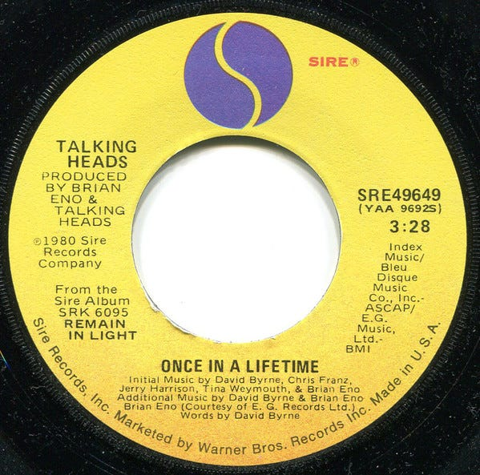
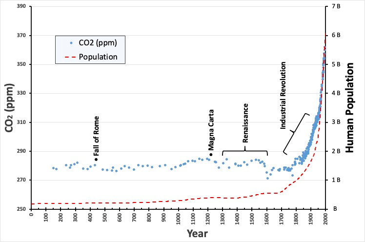
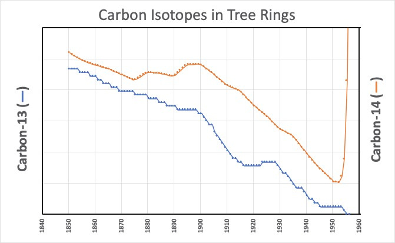
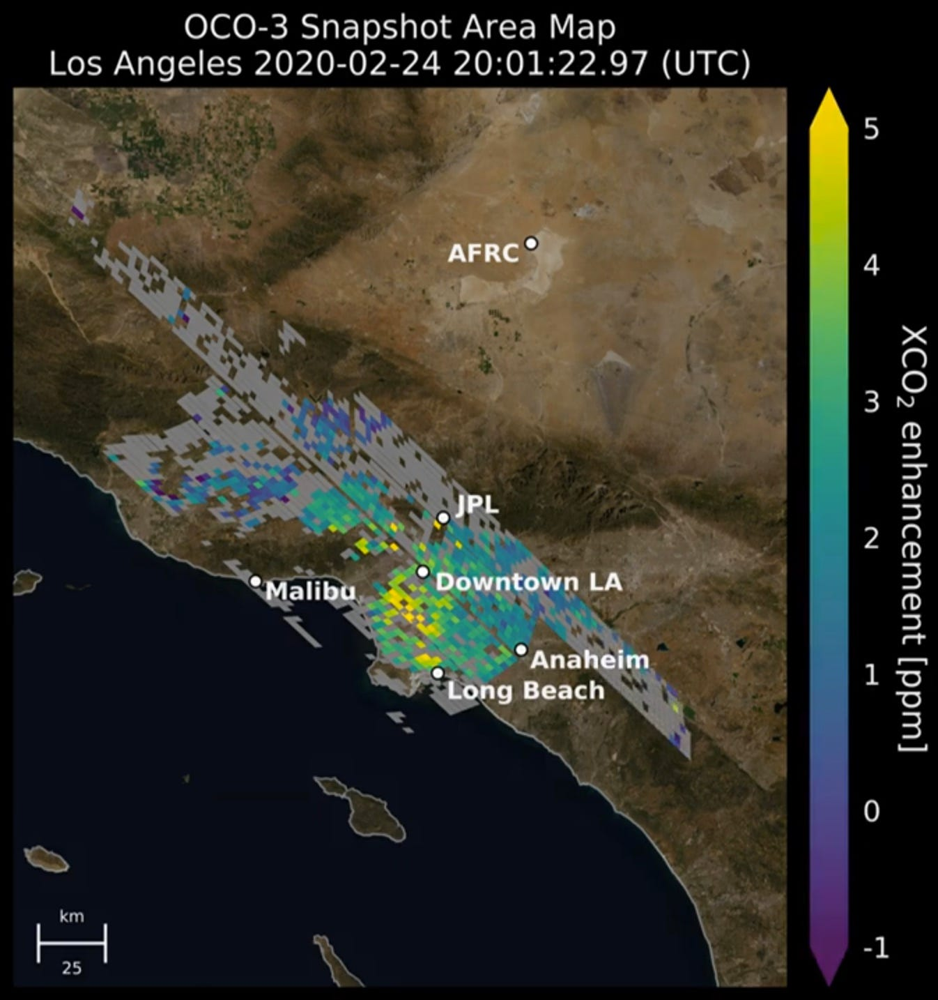

I’m Jonathan Burbaum, and this is Healing Earth with Technology: a weekly, Science-based, subscriber-supported serial. In this serial, I offer a peek behind the headlines of science, focusing (at least in the beginning) on climate change/global warming/decarbonization. I welcome comments, contributions, and discussions, particularly those that follow
Deming’s caveat
, “In God we trust. All others, bring data.” The subliminal objective is to open the scientific process to a broader audience so that readers can discover their own truth, not based on innuendo or
ad hominem
attributions but instead based on hard data and critical thought.
You can read Healing for free, and you can reach me directly by replying to this email.
If someone forwarded you this email, they’re asking you to sign up. You can do that by clicking
here
.
Like Science itself, I refer to facts established previously, so I recommend reading past posts in order if this is your first encounter. To catch up to this point will take approximately 36 minutes of your time in 10-minute chunks. [Or, of course, more, if you decide to think.]
To start with, thanks to
Tim Heidel
for introducing me to
Rebecca Dell
, a genuine climate modeler who set me straight on a few things. My last newsletter had a flawed assumption that climate models and weather models are closely related. In fact, the two models are more like distant cousins because of the timescales involved, so scientists must validate them in quite different ways. So, I’ll cover how climate models are validated in a subsequent post. The take-home is nevertheless accurate—to believe in climate change means that you have to believe in the predictive value of climate models run on supercomputers. To discount climate change means that you must believe that your experience predicts the future better than supercomputers. As always, you’re entitled to your own beliefs, but I know myself well enough to know that I’m not going to win a chess match against Deep Blue. [That having been said, climate change isn’t a bounded game like chess. So I still need to critically examine how useful climate models are.]
A less erudite opening quote than last time (and one that shows my age):

And you may find yourself living in a shotgun shack
And you may find yourself in another part of the world
And you may find yourself behind the wheel of a large automobile
And you may find yourself in a beautiful house, with a beautiful wife
And you may ask yourself, "Well... how did I get here?"
How
did
we get here?
Today’s read: 8 minutes.
The story continues….
We’ve established two solid facts:
Earth is getting a little warmer
Carbon dioxide is the culprit
We’ve also established one scary prediction based on climate scientists’ interpretation of climate models run on supercomputers: A warming planet will eventually lead to significant but unpredictable major transitions in climates, perhaps within the next century.
Let’s return to the historical record of atmospheric carbon dioxide that we touched on in “
Carbon: Hero or Villain?
”:

Time course of carbon dioxide concentration in the atmosphere (from Rubino, M., et al. (2013), A revised 1000 year atmospheric
δ
13C-CO2 record from Law Dome and South Pole, Antarctica,
J. Geophys. Res. Atmos.
, 118, 8482– 8499, doi:
10.1002/jgrd.50668
.) and human population growth. Major historic events are noted—the Dark Ages span approximately from the Fall of Rome through the Renaissance.
This graph shows a clear correlation between industrialization/population growth and rising carbon dioxide levels. From a pure Science perspective, it isn't easy to establish a cause if you can’t do an experiment. But any relationship must be constrained by the bedrocks of Science, experimentally-proven Laws of Nature. Since we know that there’s more carbon in the air, there
must
be less carbon somewhere else. So, if we can establish where the carbon came from, maybe we can create a cause-and-effect relationship narrative.
The problem isn’t that carbon dioxide is present in the atmosphere. It’s that there’s more carbon dioxide in the air than humans have experienced before. Carbon dioxide has always been there, so it’s not a true pollutant, even if you look at it as a byproduct of energy use. Energy sources based on carbon existed long before the Industrial Revolution, including muscles (humans and animals use carbohydrates and exhale carbon dioxide, for example) and biomass (aka “firewood,” which releases carbon dioxide when burned). Other energy sources included wind and flowing water. In modern vernacular, all of these sources are defined as “renewable”, both carbon-based and carbon-free. Thus, a fully renewable future is one of
stable
carbon dioxide levels similar to those humans have experienced in the past.
An aside:
I hate the set phrase “fossil fuel”. It’s an overused, trite derogative, and (if you laughed with me at the Fossil Phil trading card
earlier
) it’s also deceptively simple. Carbon is complicated, it’s both good and bad, and derisive labels vastly oversimplify the relationship. Even as the villainous form, carbon dioxide, it’s both good and bad! From the perspective of Science, it’s absurd to tag a carbon dioxide molecule with a “good” label if it comes from respiration and a “bad” label if it comes from combustion—it’s the same damned molecule! Yet, that’s precisely what some who wave the banner of Science seem to want to do! So, to be clearer, let’s put a new set phrase out there, one that’s been underutilized in my view, but one that aptly distinguishes baseline (pre-1750) carbon from the carbon that’s appeared since then:
geologic carbon
.
So, the question this week is, “What is the data that human activity has put the additional carbon dioxide in our atmosphere?” Obviously, there’s the “Duh!” answer, which is illustrated in the graph above. Since the Industrial Revolution, the human population has grown in lockstep with carbon dioxide. Industrialization, in turn, was powered by the discovery and use of stored energy sources (coal, then natural gas, then petroleum), all based on carbon as the storage vessel. The connection between resource extraction and more carbon in the atmosphere is pretty direct: The obvious inference is that the carbon in the air increased because there’s less in the ground. Humans have been the agents of extraction.
We could, in principle, measure how much we’ve taken from the ground and compare it to how much is in the air to see if the numbers line up. That’s problematic for several reasons. First, the historical data (for extraction) is incomplete and fragmented, so we aren’t really sure how much we’ve taken out. Second, carbon dioxide in the air is in constant exchange with the earth, so the atmosphere isn’t the only place geologic carbon could end up. Finally, we use geologic carbon for more than just combustion, so not all of it goes into the air. The point is, comparing the two numbers to identify sources is flawed; whether or not the numbers line up, it’s inconclusive.
Still, it’s worth an estimate to see if it makes sense: The most recent data indicates that there are about 1 trillion more tons of carbon dioxide in the air than we had before 1750.
1
That’s a lot, but let’s put it into a scale we can comprehend: How many (modern) years of extraction would account for that much change? For both oil and coal, that represents about 70 years of current annual global production, while for natural gas, it’s about 150 years.
2
That doesn’t sound ridiculous for something we’ve been doing (with our increasing population) for over 350 years among three forms of energy.
Fortunately, there are other ways to strengthen the linkage. When I said earlier that tagging carbon dioxide that comes from geologic sources is absurd when considering global warming, it’s perfectly reasonable from the perspective of Science. It turns out that geologic carbon has a little less of the heavier (isotopic) forms, carbon-13 (about 1% of total carbon), and essentially no carbon-14 (about 1 part in a trillion in the air). For our purposes, it doesn’t matter why—the point is, we can measure the isotopic composition of the air over time. The more carbon dioxide comes from old (geologic) sources, and an analysis will find the less these heavier forms. If the source is something else, then the composition may or may not change. Plus, we don’t have to go to the trouble of looking at ice cores for fossilized air—we can look at tree rings since each ring records the atmosphere's composition as it is formed. Time for the data:

Data from Graven, H., Allison, C. E., Etheridge, D. M., Hammer, S., Keeling, R. F., Levin, I., Meijer, H. A. J., Rubino, M., Tans, P. P., Trudinger, C. M., Vaughn, B. H., and White, J. W. C.: Compiled records of carbon isotopes in atmospheric CO2 for historical simulations in CMIP6, Geosci. Model Dev., 10, 4405–4417, https://doi.org/10.5194/gmd-10-4405-2017, 2017.
I’ve cut the data off in the ‘50s because the Carbon-14 data is itself polluted—it rose dramatically starting about 1954. The amount of this (radioactive) isotope jumped in the 1950s and 1960s. The reason: Human action! We were doing above-ground nuclear testing until test ban treaties came into effect in 1963. This added a huge amount of Carbon-14 to the atmosphere (relatively speaking), and our trees dutifully recorded it.
The conclusion is clear—the isotopic composition of the atmosphere has been changing since at least 1850, consistent with the addition of carbon dioxide from geologic carbon. The narrative is even more apparent now: The carbon dioxide concentration in the atmosphere has been rising in a manner consistent with the extraction and combustion of geologic carbon by humans. If you’ve got an alternative explanation for these data, I’m all ears. [Note that there are still two linked narratives: One, the expanding human population has created more carbon dioxide. Two, the combustion of geologic carbon has enabled the human population to expand. More on this later.]
Of course, like temperature, satellites have allowed us to get a lot better at measuring sources of carbon dioxide, and each new measurement strengthens the narrative. Take, for example, these very sensitive measurements of carbon dioxide concentrations from space:

Map of carbon dioxide in the greater Los Angeles area at 1:00 pm on a Monday (before COVID), as captured by the OCO-3 satellite. Note the increased carbon dioxide centered in the urbanized areas of the city. For the full video and references, the link is
here
.
The evidence is overwhelming that the carbon added to the atmosphere since the Industrial Revolution comes from the combustion of geologic carbon, an essential human activity. If you disagree, I welcome the data—it’s an awful lot of carbon to hide somewhere else.
Still contemplating where to go with the next one, I think we need to explore carbon a lot more before discussing solutions.